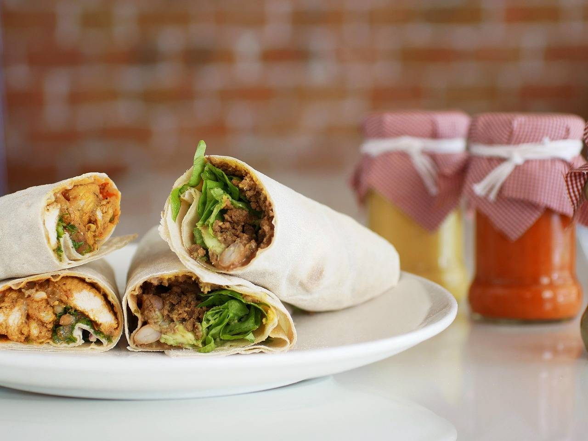

Easy Chicken Fajitas
Home

Description
Need a simple, vibrant midweek meal the family will love? Put together these easy chicken fajitas and people can create their own masterpieces at the table
Ingredients
- 2 Chicken Breasts
- 1 Red Onion
- 1 Red Pepper
- 1 Red Chilli
- 1 TBSP Smoked Paprika
- 1 TBSP Ground Coriander
- Ground Cumin
- 2 Garlic Cloves
- 4 TBSP Olive Oil
- 1 Lime
- Tobasco
- 8 Tortillas
- Mixed Salad
- 230G Fresh Salsa
Steps
- Step 1 - Heat oven to 200C/180C fan/gas 6 and wrap 8 medium tortillas in foil.
- Step 2 - Mix 1 heaped tbsp smoked paprika, 1 tbsp ground coriander, a pinch of ground cumin, 2 crushed garlic cloves, 4 tbsp olive oil, the juice of 1 lime and 4-5 drops Tabasco together in a bowl with a big pinch each of salt and pepper.
- Step 3 - Stir 2 finely sliced chicken breasts, 1 finely sliced red onion, 1 sliced red pepper and 1 finely sliced red chilli, if using, into the marinade.
- Step 4 - Heat a griddle pan until smoking hot and add the chicken and marinade to the pan.
- Step 5 - Keep everything moving over a high heat for about 5 mins using tongs until you get a nice charred effect. If your griddle pan is small you may need to do this in two batches.
- Step 6 - To check the chicken is cooked, find the thickest part and tear in half if any part is still raw cook until done.
- Step 7 - Put the tortillas in the oven to heat up and serve with the cooked chicken, a bag of mixed salad and one 230g tub of fresh salsa.